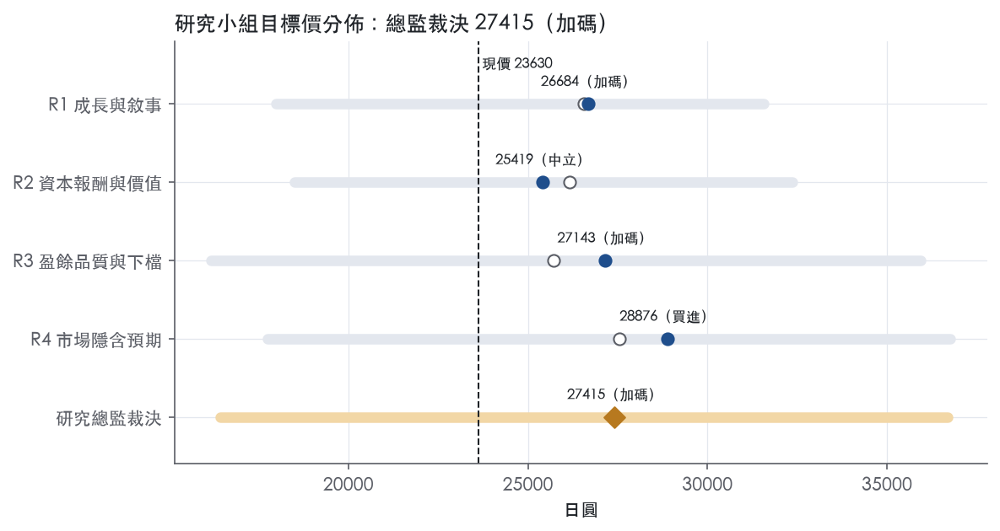

評等總表 › 未分類 › 6367.T
ダイキン工業（6367.T）
盈餘上修、倍數持平，溫和看多｜評等 加碼｜目標價 27415
評等歷史與財報快評
| 報告日 | 評等 | 目標價 | 當時股價 | 超額報酬 |
|---|---|---|---|---|
| 2026-11-16 | 加碼 | 27,415 | 23,630 | +9.7% |
| 評等 | 加碼 |
| 12 個月目標價 | 27415 日圓 |
| 現價 | 23630.00 日圓（2026-11-16） |
| 預期報酬 | 股價 +16.0%＋股息 1.5%＝總報酬 +17.5%；日股門檻 7.8%，超額 +9.7% |
| 估值方法 | P/E 21.0x，套在第 5–8 季的EPS（也就是一年後的未來四季） |
| 三情境 | 熊 16428／基準 27338／牛 36698 |
| 研究流程 | 四位研究員兩輪辯論＋研究總監裁決 |
| 資料來源 | EDINET、TDnet、J-Quants、Yahoo、FRED（全免費） |
目錄
第一章 結論摘要
盈餘上修、倍數持平，溫和看多（研究總監裁決，四位研究員兩輪辯論後）
評等 加碼｜12 個月目標價 27415 日圓（總監三情境機率加權 27917 與研究員中位數 26913 各半）｜現價 23630.00（2026-11-16）
預期報酬：股價 +16.0%＋股息 1.5%＝總報酬 +17.5%。日股門檻 7.8%，超額 +9.7%。
估值方法：P/E 21.0x，套在第 5–8 季的EPS（也就是一年後的未來四季）。三情境：熊 16428（17%）／基準 27338（57%）／牛 36698（26%）。
什麼會讓研究總監改變看法：2027-02 Q3短信若Q3營益率≤5.2%且全年計畫下修，我改採R2的路徑（營益率8.0%起步、倍數退到市場持平）並轉中性；若FY2027有報ROIC≥10.1%且空調分部利益成長超過營收成長，我上移到R4的22x並提高牛機率。
投資論點
- 公司計畫偏保守：過去四季營收已超過全年計畫5,440.00B，盈餘會被上修。
- 本益比持平即可：目標本益比21x只要求一年後本益比停在十年中位數。
- 成本轉嫁失敗：銅、物流費與美國關稅若超過售價轉嫁，營益率會掉到7.5%。
關鍵數字
| 過去四季（實際，FY2027Q2） | 未來四季 | 第 5–8 季 | 第 9–12 季 | |
|---|---|---|---|---|
| 營收（B） | 5,447.0B | 5,828.3B | 6,178.0B | 6,486.9B |
| 營收成長 | 15.0% | 7.0% | 6.0% | 5.0% |
| 營業利益率 | 8.1% | 8.4% | 8.5% | 8.7% |
| EPS（日圓） | 1001.80 | 1178.90 | 1301.80 | 1440.06 |
| EPS 成長 | 7.1% | 17.7% | 10.4% | 10.6% |
| 每股股息（日圓） | — | 0.00 | 0.00 | 0.00 |
| P/E（現價） | 23.6x | 20.0x | 18.2x | 16.4x |
| 股息殖利率（現價） | 1.5% | — | — | — |
過去四季為申報數字；預測為研究總監的假設、程式計算。倍數與殖利率都用現價計算，用來看現價對應各期獲利的高低。
三情境
| 情境 | 機率（歷史） | 故事 | 未來四季營收成長 | 第 5–8 季營益率 | 倍數 | 目標價 | 股價漲跌 |
|---|---|---|---|---|---|---|---|
| 熊 | 17%（13%） | 風險表第1條：銅、ナフサ由来部材、物流費與美國關稅超過售價轉嫁，疊加本行美國下行路徑（GDP 0.3、資料中心資本支出暫停）與第3條中國實需顯露，日圓160僅部分抵銷，新買回停止（已完成部分仍在，故−1.5%），倍數落到前瞻帶P10 | 1.0% | 7.0% | 18.0x | 16428 | -30.5% |
| 基準 | 57%（63%） | 下半年小幅超越保守計畫，FY2028上半年高基期降速，營益率照指引回升，已完成買回進入平均股數，trailing倍數在10年中位數持平 | 7.0% | 8.5% | 21.0x | 27338 | 15.7% |
| 牛 | 26%（24%） | 本行基準總經路徑（日圓153、美國GDP 1.8），資料中心チラー、歐洲ヒートポンプ、半導體氟化學延續，FY2027大幅超越455.00B、FY2028計畫再給一階營益率、ROIC回10.1%以上，倍數升向前瞻帶P50下方；y1自R4的11%調為10% | 10.0% | 9.1% | 25.0x | 36698 | 55.3% |
目標價由程式依研究總監的驅動與倍數計算；機率由研究總監給定。括號內是歷史頻率：把這檔股票過去十年 12 個月報酬的波動形狀，置中在基準情境，結果落在各情境附近的比例。

四位研究員用不同方法各自估值，回應研究總監的質疑後交出第二輪，最後由總監逐點裁決。各研究員的主張見第七章，裁決理由見第八章，完整論證見《研究底稿》。
| 立場（一輪→二輪） | 加權目標價（一輪→二輪） | 評等（一輪→二輪） | 第二輪倍數 | 熊～牛目標價 | |
|---|---|---|---|---|---|
| R1 成長與敘事 | 看多→看多 | 26554→26684 | 加碼→加碼 | 23.0x | 17993～31570 |
| R2 資本報酬與價值 | 中性→中性 | 26155→25419 | 中立→中立 | 22.5x | 18503～32364 |
| R3 盈餘品質與下檔 | 中性→中性 | 25709→27143 | 中立→加碼 | 21.0x | 16181～35925 |
| R4 市場隱含預期 | 看多→看多 | 27558→28876 | 加碼→買進 | 22.0x | 17754～36764 |
| 研究總監裁決 | 看多 | 27415 | 加碼 | 21.0x | 16428～36698 |
目標價由程式依各自的驅動與倍數計算；評等＝機率加權總報酬 − 日股門檻。
第二章 業務概況
公司做什麼、賣給誰
大金工業是一家以空調・冷凍機為核心、化學品為第二引擎的全球製造與銷售集團。集團經營的主要事業為空調・冷凍機、化學、油機及特機製品的製造（含工事施工）與銷售。空調・冷凍機事業涵蓋住宅用機器（壁掛式冷氣、空氣清淨機、熱泵式熱水器、地暖）與業務用機器（箱型冷氣、渦輪冷凍機、全熱交換器、空氣處理機組等），客戶從一般家庭延伸到商辦、工廠、資料中心與船舶。集團旗下有連結子公司324家（國內31家、海外293家）及權益法適用公司16家，是一家靠全球併購與本地化生產堆疊出來的空調龍頭。LTM 營收 5,447.00B 日圓、EBITDA 680.75B 日圓，規模上已是全球最大空調集團之一。
業務分部與產品
公司依產品相似性分為「空調・冷凍機事業」與「化學事業」兩個報告分部，另有「其他事業」（油機、特機、電子系統）不計入報告分部。FY2026（2025/4-2026/3）空調・冷凍機事業外部銷售 4,621,131百萬円（約4,621.13B），化學事業281,469百萬円（約281.47B），其他事業112,435百萬円（約112.44B），合計5,015,036百萬円（約5,015.04B）。換算下來空調・冷凍機事業占集團營收約92%、化學事業約6%、其他事業約2%。分部利益（營業利益口徑）方面，空調・冷凍機376,991百萬円、化學33,089百萬円、其他4,925百萬円，空調・冷凍機事業利潤率約8.2%、化學事業約11.8%，化學事業單位利潤率明顯優於空調本業。化學事業產品包括氟碳氣體（冷媒）、氟樹脂、氟橡膠、半導體用蝕刻劑、撥水撥油劑等，定位是氟化學全球No.1與Only One的化學解決方案供應商。油機事業產品為工業機械用油壓機器、工程機械用油壓變速箱；特機事業則供應防衛省用砲彈、誘導彈零件與居家氧氣醫療器材。年度研發費用合計150,756百萬円（約150.76B），其中空調・冷凍機事業134,097百萬円、化學事業12,823百萬円、其他事業3,834百萬円。年度資本支出合計300,030百萬円（約300.03B）。
客戶、地區與通路
公司地理營收結構顯示美洲是最大單一市場，FY2026 美國顧客合同收入1,786,513百萬円（約1,786.51B），遠高於日本809,636百萬円（約809.64B）、歐洲857,796百萬円（約857.80B）、亞洲大洋洲711,228百萬円（約711.23B）、中國471,917百萬円（約471.92B）。美洲占集團總營收比重最高，顯示北美空調（含Daikin Applied資料中心用大型冷凍機）與氟化學是成長火車頭。公司未揭露佔營收10%以上的單一客戶，顯示終端客戶高度分散，但Daikin Comfort Technologies North America一家子公司的對外銷售占連結營收比重已超過10%，屬「特定子公司」。通路上公司在國內透過多家區域販售子公司（東京、近畿、東海等HVAC Solution公司）直接面對經銷商與工程商；海外則透過大金歐洲NV、大金アプライドアメリカズ等區域總部整合製造與銷售。公司持有137家企業的政策保有股（交叉持股），多為空調・化學事業的客戶或供應商，以維繫業務合作關係而非純投資，這是日股特有、與東證資本效率要求有緊張關係的項目。
最近四季發生了什麼
FY2026Q3（2025/12）營收1,187.53B、年增7.9%，營益率降至5.2%，屬季節性淡季（is/；資料包8季表）。FY2026Q4（2026/3）營收跳升至1,348.71B、年增16.4%，營益率回升至7.9%，全年營收收在5,015.04B。進入FY2027，Q1（2026/6）營收1,426.81B、年增17.5%，營益率9.2%；Q2（2026/9，即當期中間決算）營收1,483.96B、年增17.3%，淨利92.82B，EPS 331.47（資料包8季表）。公司在最新決算短信中指出，當期中間（2026/4-9）營收2,910,766百萬円（約2,910.77B）、年增17.4%，營業利益270,793百萬円（約270.79B）、年增9.8%，經常利益247,188百萬円（約247.19B）、年增2.2%，母公司歸屬中間淨利172,959百萬円（約172.96B）、年增7.5%。分部驅動力：空調・冷凍機事業中間營收2,699,657百萬円（約2,699.66B）、年增17.0%，營業利益244,364百萬円（約244.36B）、年增5.2%，其中北美資料中心冷凍機與歐洲熱泵暖房需求強勁、中國在不動產低迷中靠高附加價值產品與匯率正效果撐住；化學事業中間營收158,789百萬円（約158.79B）、年增25.2%，營業利益24,214百萬円（約24.21B）、年增77.3%，半導體相關需求回溫是主因。公司已將FY2027全年計畫上修：營收由5,150.00B上修至5,440.00B，營業利益由436.00B上修至455.00B，經常利益由414.00B微幅上修至417.00B，母公司淨利由278.00B上修至280.00B，EPS由949.32上修至1,006.45。公司假設下半年匯率為1日圓150円、1歐元175円。資產負債表上，中間期末有息負債比率由18.8%升至22.8%，主要因商業本票增加與執行庫藏股買回（股東權益減少271.22B至3,045.32B）。
公司自己說的成長引擎與策略
公司在2026年啟動以2030年度為目標的中期戰略「FUSION30」，目標是「提供『環境與空氣的新價值』、成為世界持續被選擇的高收益永續企業」。FY2026（初年度）六大全社重點主題為：推動銷售價格政策與營業力強化、加速差異化商品投放、透過變動費降低強化成本競爭力、擴大全球服務與解決方案事業收益、可視化並徹底檢討固定費結構以降低營收固定費率、強化被併購公司收益力以儘早最大化投資成果、以及跨集團展開先進案例以強化事業體質。公司明確將「稼ぐ力的再強化」列為FUSION30最優先課題，並以利益率提升與創歷史新高業績為目標。在技術面，公司透過與東京科學大學、東京大學、大阪大學等產學合作推進空調核心技術（壓縮機、馬達、變頻器）升級，並在Toyota Woven City進行新型空調系統實證、與日立共同開發工廠設備AI故障診斷。在資本政策上，公司揭示以ROE、ROIC等「率的經營」指標及FCF為重，透過壓縮應收帳款與存貨改善營運資本以創造現金、支持成長投資與股東回報；同時公司正逐步縮減137家政策保有股中保有理由不充分者。整體看，大金的成長故事是「空調全球化＋資料中心/半導體兩條新需求曲線」疊加「降本與固定費結構改革」雙軌並進；中間期在美洲、歐洲、化學品三線全面超預期是上修全年計畫的主因，風險在於美國關稅與原材料（銅、石化原料）成本上行、及中國地產持續探底對空調需求的壓制。公司全年計畫隱含下半年營收年增率明顯低於上半年17%的水準，顯示管理層對下半年需求保持一定保留。

第三章 經濟護城河
結論：窄，趨勢變窄
大金評為窄護城河。依據是兩項優勢：一是冷媒與空調核心零組件自製的垂直整合，二是全球在地化生產規模，我們有把握這兩項能讓 ROIC 在未來 5 年以上維持在資本成本附近或之上。但超額報酬已從高點收斂，撐不起「寬」的評級。趨勢判為變窄，因為最新 ROIC 9.2% 是十年最低值，而且低於資本成本代理值 10.1%。
優勢來源
主要來源是成本優勢，其次是技術型無形資產，轉換成本還在萌芽階段。
- 成本優勢
- 化學事業本身生產冷媒用的氟碳氣體，空調事業的關鍵耗材由集團內部供應。
- 集團有專門的壓縮機子公司，母公司向其採購空調壓縮機用零件。
- 公司正推進壓縮機、馬達、變頻器等空調核心技術的高度化。
- 集團有連結子公司 324 家（國內 31 家、海外 293 家）。
- FY2026 有形固定資產合計 1,464,475M 日圓，分布在日本、美國、亞洲大洋洲、歐洲、中國等地區。
- 從冷媒、壓縮機到整機一條龍，加上各主要市場在地生產，構成同業難以複製的單位成本與供應穩定性。
- 無形資產（技術與產品力）
- FY2026 集團研發費用 150,756M 日圓，其中空調・冷凍機事業 134,097M 日圓。
- 壁掛式冷氣『うるさらX』與店鋪辦公空調「FIVE STAR ZEAS」皆標榜業界頂級的節能性。
- 歐洲已推出符合環境規制與 F 氣體規制的各型冷水機。
- 原文沒有揭露專利數量或品牌溢價數據，這一類的證據僅止於產品規格與研發投入。
- 轉換成本（萌芽）
- 公司已在北美、並於本年度在歐洲，開始導入可統合控制他牌機器的開放式 BMS。
- 資料中心用途方面，公司以冷水機加二次側空氣處理機組的組合提案。
- 公司把擴大全球服務與解決方案事業收益列為 FY2026 重點主題。
- 系統與服務綁定若能擴大，會提高客戶更換供應商的成本，但目前在數字上還看不到。
網路效應與效率規模沒有證據，不列入。
數字上看得到嗎
數字支持「有優勢」，但不支持「優勢在擴大」，主張與數據之間有衝突。
支持的一面
- 毛利率十年平均 34.6%、標準差 0.6%，區間 33.4%–35.8%。這代表定價能力與成本結構長期穩定，與成本優勢的主張一致。
- ROIC 十年平均 11.3%，比資本成本代理值高 1.2 個百分點；有資料的 9 年中有 7 年高於資本成本。
衝突的一面
- ROIC 從最高 13.8% 一路降到最新的 9.2%。
- 營業利益率從最高 11.3% 降到最新的 8.3%，最新值也是十年最低。
仍維持「窄」的理由
- 第一，侵蝕發生在毛利以下，而不是毛利本身。公司把「降低營收固定費率」列為課題。FY2026 商譽攤銷 51,371M 日圓直接壓低日本準則下的營業利益。換言之，報酬率下滑主要來自併購帶來的投下資本與費用，而非產品競爭力流失。
- 第二，資本成本代理值是以美國 10 年債（5.1）為基礎，而日本 10 年公債是 2.841。以日圓計的資本成本應低於代理值，最新年度的負利差有一部分來自代理值設定。
不給「寬」的理由
- 即使調整資本成本，ROIC 仍處於十年最低。
- FCF 利潤率的標準差達 2.9%，最低曾到 -0.4%。重資本擴張期的現金報酬並不穩定。
什麼會侵蝕它
最大的侵蝕來源是併購資本的報酬率不足。
- 併購資本
- FY2026 空調・冷凍機事業的商譽未攤銷餘額為 258,981M 日圓。
- 同年該事業認列減損損失 11,849M 日圓。
- 公司自己把「強化被併購公司的收益力」列為重點主題。
- 價格競爭與關稅
- 公司描述中國市場低迷，並強調不依賴價格競爭。
- 公司也點名美國關稅政策與通商政策變化對供應鏈的影響。
- 化學事業的循環性
- 化學事業分部利益從 FY2025 的 46,119M 日圓降到 FY2026 的 33,089M 日圓。
- 第二引擎的循環性會削弱整體超額報酬的穩定度。
- 資本支出擴張
- FY2026 設備投資總額 300,030M 日圓。
- 有形固定資產從 FY2025 的 1,279,327M 日圓增加到 FY2026 的 1,464,475M 日圓。
- 若資料中心等產能擴張的回收慢於預期，ROIC 會繼續往下。
追蹤指標：ROIC 能否回到 10.1% 代理值之上。連續兩年做不到，我們會把評級下修為「無」。
對估值的含意
目標倍數相對空調與工業設備同業可給小幅溢價，理由是垂直整合帶來的毛利穩定度，但溢價的維持期間只能以 5 年估算，不應以永續溢價外推。目前 P/E 23.6x 接近 10 年中位數 23.7x，低於 5 年中位數 25.7x。在 ROIC 回到資本成本之上之前，我們不建議以 5 年中位數以上的倍數作為目標。
量化底稿：報酬率與利潤率的水準與穩定度
| 指標 | 最新 | 十年平均 | 標準差 | 最低 | 最高 |
|---|---|---|---|---|---|
| ROIC | 9.2% | 11.3% | 1.4% | 9.2% | 13.8% |
| 毛利率 | 34.5% | 34.6% | 0.6% | 33.4% | 35.8% |
| 營業利益率 | 8.3% | 9.9% | 1.1% | 8.3% | 11.3% |
| FCF 利潤率 | 5.1% | 5.8% | 2.9% | -0.4% | 10.8% |
| ROE | 9.1% | 11.7% | 2.0% | 9.1% | 15.7% |
程式計算。資本成本代理值（10 年債＋5%）：10.1%；ROIC 平均減資本成本：1.2%；ROIC 有資料的 9 年中，高於資本成本 7 年。
第四章 財務體質與盈餘品質
結論：中品質，現金轉換持續強於淨利，但庫藏股買回正在快速拉升負債比與有息負債比例，需要打一點折扣再估值
量化底稿顯示現金流與應計比率全部是綠燈，盈餘沒有被會計灌水的證據【判，依量化底稿】。真正值得留意的不是盈餘品質本身，而是FY2027上半年資本配置動作（大舉買回庫藏股、商業票據大增）讓資產負債表體質明顯弱化，屬於「資本結構風險」而非「盈餘造假風險」。
現金有沒有跟上盈餘
營業現金流／淨利 LTM 1.96x、近三年平均 1.72x、十年平均 1.53x，三個區間都遠高於 1.00x 的綠燈門檻，盈餘有紮實的現金支撐。自由現金流／淨利 LTM 1.13x、近三年 0.85x、十年 0.88x 也都在綠燈區間，扣掉資本支出後現金仍足夠。應計比率 LTM -4.7%、近三年 -3.8%、十年平均 -2.9%，全部是負值，代表淨利相對總資產是靠現金而非應計項目堆出來的，方向正確。 原文也印證這一點：FY2026 全年營業活動現金流入4,658.48M百萬円（即4,658.48B日圓，注：原文單位為百萬円，換算後寫法見下），因應收票據、應收帳款及契約資產增加，較前期減少486.02M百萬円的收入。不過即便減少，CFO 465.85B（年度表）仍明顯高於淨利275.23B（年度表），現金轉換比例健康。 半年度數字同樣支撐結論：當中間期（FY2027上半年）營業活動現金流入341.019M百萬円，較去年同期的243.416M百萬円大增97.602M百萬円，主因仕入債務（應付帳款）增加；而同期歸屬母公司中間純利益為172.959M百萬円，CFO對淨利的覆蓋倍數依然遠大於1倍。
公司調整了什麼（GAAP 與非 GAAP 的差距）
大金是日本準則申報，這份決算短信與有價證券報告書都沒有另外編製非GAAP調整後盈餘，所以沒有「加回SBC、攤銷」這類非GAAP欄位可抄。但特別損益（特別利益／特別損失）值得拆開看：FY2027上半年特別利益合計6,199M百萬円，其中包含投資有価證券売却益1,981M百萬円、關係會社清算益2,094M百萬円、退職給付制度改定益2,123M百萬円；特別損失合計2,169M百萬円，包含固定資產處分損923M百萬円、減損損失1,239M百萬円。我認為退職給付制度改定益、投資證券出售益、關係會社清算益屬於一次性會計增益，不是本業賺來的錢，估值時應該剔除；減損損失與固定資產處分損雖然也是特別項目，但反映的是真實資產減損，屬於真實經濟成本，不應完全忽略。 另外營業外收支裡有一項「インフレ会計調整額」（高通膨會計調整，通常對應土耳其、阿根廷等高通膨子公司），FY2027上半年由前期的收益5,983M百萬円轉為費用2,553M百萬円。這是會計口徑（IAS 29式的通膨調整）造成的非現金波動，不是經營面惡化，應視為假警報而非真問題。 全年度看，FY2026特別損益因減損損失增加而惡化，較前期減少1,419.2M百萬円，變成負4,543M百萬円，同樣是減損主導，屬於真實但非經常性的成本認列。
資產負債表與資本配置
自有資本比率從FY2025的54.6%上升到FY2026的55.9%，股東權益看起來在增厚。但FY2027上半年風向反轉：有息負債比率從FY2026年底的18.8%快速跳升到22.8%，純資產較FY2026年底減少271.221M百萬円，主因自己股式（庫藏股）取得。資產負債表上自己株式從△1,178M百萬円暴增到△350,512M百萬円，是本期股東權益下滑的主因。同時短期融資工具大增：商業票據從28,393M百萬円增加到158,629M百萬円，社債從200,000M百萬円增加到280,000M百萬円，長期借入金從249,387M百萬円增加到289,742M百萬円。 好消息是，即便負債增加，量化底稿顯示淨負債／EBITDA LTM僅0.68x、近三年平均0.28x、十年平均0.38x，遠低於3.00x紅燈線；利息保障倍數LTM 10.5x、近三年9.57x，仍高於8.00x綠燈門檻，只是比十年平均20.5x明顯下滑，顯示槓桿正在從極低水位往上走，但還沒到警戒區。股利加回購占淨利比例LTM 34.7%、近三年32.3%、十年平均27.0%，是黃燈，顯示股東回饋力度正在加大，與庫藏股數據吻合。
紅旗逐條說明
量化底稿八項指標中七項是綠燈，沒有任何一項落在紅燈區間，所以程式沒有標出紅旗。但有兩項需要額外說明：
- （股利＋回購）／淨利＝34.7%／32.3%／27.0%，黃燈：這不是盈餘品質問題，而是股東回饋力度上升的訊號，且與資產負債表看到的庫藏股暴增271.221B（股東權益減少金額，即接近271.221B日圓）完全對得上，屬於資本配置選擇而非警訊，可解釋為假警報。
- SBC／營收缺資料（—）：資料包沒有可用的股權薪酬數字，無法判斷稀釋成本規模，這是資料缺口而非紅燈，但也代表無法完全排除股權薪酬侵蝕盈餘的可能性，建議估值研究員向公司IR確認。
此外，稀釋股數年變動LTM為-1.1%（綠燈），顯示庫藏股買回已經開始實質減少流通股數，與前述資本配置動作方向一致，屬於正向訊號而非紅旗。利息保障倍數從十年平均20.5x滑落到LTM 10.5x，雖然仍是綠燈，但下滑幅度大，是我主動加的觀察項（非程式紅旗）：若公司繼續用舉債方式買回庫藏股，覆蓋倍數可能進一步下滑，建議後續季度持續追蹤。
對估值的含意
估值應以GAAP歸屬母公司淨利為主軸，但要把退職給付制度改定益、投資證券出售益、關係會社清算益這類一次性特別利益剔除，減損與資產處分損則視為真實成本保留，整體不需要對核心營業利益做大幅打折。槓桿目前仍在低位（淨負債／EBITDA僅0.68x），尚不足以限制估值倍數，但FY2027上半年有息負債比率跳升至22.8%、商業票據與社債同步增加，是庫藏股融資驅動的槓桿上升，若這個趨勢延續到下半年，應該在倍數假設上預留一些保守空間，而不是直接套用十年平均的寬鬆槓桿區間。
量化底稿：盈餘品質計分表
| 項目 | LTM | 近三年 | 十年 | 燈號 | 規則 |
|---|---|---|---|---|---|
| 營業現金流／淨利 | 1.96x | 1.72x | 1.53x | 綠 | ≥1.00x 綠、<0.80x 紅 |
| 自由現金流／淨利 | 1.13x | 0.85x | 0.88x | 綠 | ≥0.90x 綠、<0.60x 紅 |
| 應計比率（(淨利−CFO)／平均總資產） | -4.7% | -3.8% | -2.9% | 綠 | ≤0.0% 綠、>5.0% 紅 |
| SBC／營收 | — | — | — | — | ≤3.0% 綠、>8.0% 紅 |
| 淨負債／EBITDA | 0.68x | 0.28x | 0.38x | 綠 | ≤1.50x 綠、>3.00x 紅 |
| 利息保障倍數（營業利益／利息） | 10.5x | 9.57x | 20.5x | 綠 | ≥8.00x 綠、<3.00x 紅 |
| 稀釋股數年變動 | -1.1% | 0.0% | 0.0% | 綠 | ≤0.0% 綠、>3.0% 紅 |
| （股利＋回購）／淨利 | 34.7% | 32.3% | 27.0% | 黃 | ≥50.0% 綠、<0.0% 紅 |
程式計算；燈號以 LTM（無則近三年平均）判定。
第五章 主要風險
結論：最大的風險是原材料與關稅成本上升侵蝕「FUSION30」上修後的利益率，一旦銅、石化原料或美國關稅再往上一個台階，公司上修的455.00B營業利益目標會先被打折。
五大風險表
| 風險 | 觸發指標（看什麼數字、在哪裡看） | 對 EPS 的影響方向與粗略幅度 | 未來 12 個月發生機率（高／中／低） | 出處 |
|---|---|---|---|---|
| 1. 原材料／關稅成本上升（銅、石化原料、美國關稅） | 每季決算短信的「変動費」與營益率變化；銅價、美國對日關稅稅率公告 | 負向，中～大；FY2026Q3營益率已由Q2的9.9%降到5.2%【判，引用8季表】，公司明言銅與石化原料、美國關稅是下半年不確定性主因 | 高 | |
| 2. 日圓／歐元匯率偏離公司假設（150円/日圓、175円/歐元） | 即期USDJPY、EURJPY 對比公司假設；每季決算短信是否再修正匯率假設 | 負向（日圓升值）或正向（日圓貶值），大；美洲占集團營收比重最高（FY2026美國1,786.51B對日本809.64B），匯率每修一次就直接動EPS預估（決算短信已將下半年假設設為150円/175円） | 高 | |
| 3. 中國不動產低迷持續壓抑空調需求 | 中國地區分部營收年增率（決算短信每季揭露）；中國住宅銷售／開工數據 | 負向，中；公司自述「中國不動産不況の影響により需要が大きく減速」，靠匯率正效果與高附加價值產品才撐住營收 | 中 | |
| 4. 固定資產／商譽減損（併購整合不順） | 每期中間連結貸借対照表「のれん」餘額變化；是否出現減損損失認列 | 負向，中；のれん餘額由274,767百萬円（約274.77B）降至245,403百萬円（約245.40B），已有下滑，公司自承若業績變動可能認列減損影響財務成果 | 低 | |
| 5. 資訊安全事件導致生產線／物流系統停止 | 公司是否公告重大資安事件；資安相關訴訟或罰款公告 | 負向，方向明確、幅度不明（公司未量化）；公司自述一旦發生可能需支付巨額損害賠償金或制裁金，並衝擊財政狀態及經營成績 | 低 |
逐條說明
原材料／關稅成本上升是目前最直接會動到本季財報的風險。公司在最新決算短信中明確點名「米国関税措置や中東情勢の緊迫化に伴う、ナフサ由来の部材や物流費の上昇、銅をはじめとした原材料価格の上昇など、事業環境の不確実性は引き続き高い状況にあります」。這不是泛泛的宏觀風險，而是可以用每季決算短信披露的「変動費低減」進度與營益率逐季追蹤的具體項目——FY2026Q3營益率一度壓到5.2%，Q4、FY2027Q1、Q2回升到7.9%、9.2%、9.4%，季間波動本身就是這個風險在起作用的證據【判，引自8季表】。如果下半年成本上升速度超過公司「販売価格政策の推進」能轉嫁的幅度，上修後的455.00B營業利益目標會先被打折。
匯率波動是結構性的，因為美洲已是公司最大單一市場，FY2026美國顧客合同收入1,786.51B遠高於日本的809.64B。公司把下半年匯率假設訂在1日圓150円、1歐元175円，只要即期匯率偏離這組假設，換算後的海外營收與利潤就會跟公司指引出現落差，而這個落差在每一次決算短信都會被重新量化，屬於高頻可監測的風險。
中國不動產低迷是需求面風險，公司在中間決算說明中直接承認「中国では、不動産不況の影響により需要が大きく減速しました」，靠的是「販売施策の強化に加え為替のプラス効果」才讓中國區營收維持年增。這代表中國區的「正成長」裡有一部分是匯率貢獻而非真實需求回升，一旦人民幣或日圓匯率效果消退、而房地產數據沒有改善，中國區可能由正轉負。
固定資產／商譽減損風險目前還在可控範圍，のれん餘額從274.77B降到245.40B是正常攤銷或小幅調整【判，引自資產負債表】，公司自己在有報中列出減損判定邏輯：「今後の業績変動等により減損損失を認識する場合には、当社グループの財政状態及び経営成績に影響を及ぼす可能性があります」。這條的監測指標就是每期中間連結貸借対照表上のれん餘額是否出現非攤銷性的跳降。
資訊安全事件機率雖低，但公司自己把它列為獨立風險項，且明確點出一旦發生「多額の損害賠償金や制裁金の支払を要する場合があります」。由於公司未揭露量化潛在損失，這條只能靠「是否發生公告事件」這種二元指標監測，無法做連續追蹤。
公司沒寫、但我們認為該注意的
- 庫藏股買回對有息負債比率的持續推升：中間期末有息負債比率已從18.8%升至22.8%，股東權益因自己株式取得減少271.22B至3,045.32B，公司有報風險章完全沒提「資本政策加速槓桿化」這個自己造成的風險；若之後持續大額買回同時原材料成本上升侵蝕現金流，有息負債比率可能進一步上升，削弱公司應對景氣下行的財務彈性。
- 政策保有股（交叉持股）處分進度落後東證要求：公司持有137家企業的政策保有股，有報僅說明「逐步縮減保有理由不充分者」，但未給出具體時程與金額目標。在東證要求PBR改善與資本效率的壓力下，若處分進度被市場認為太慢，可能成為股價倍數重估的扣分項，但這不在公司自己的風險章節裡。
第六章 市場在定價什麼
現價 23630.00 對應 trailing（過去四季）P/E 23.6x、EV/EBITDA 10.3x、EV/EBITA —、EV/Sales 1.3x、FCF 殖利率 4.9%。主要估值倍數 P/E 現在 23.6x，落在5 年區間第 37 百分位（P10／P50／P90 = 19.8x／25.7x／32.8x）。

把程式的機械基準預測放到現價下，市場付的前瞻倍數是：P/E（未來四季） 19.9x、P/E（第 5–8 季） 17.5x。反推 DCF 顯示市價隱含未來五年營收年成長 7.7%（WACC 9.0%、終值成長 3.0%、FCF 利潤率 5.8%，SBC 不加回）。
| 倍數 | 現在 | 5 年 P10 | 5 年 P50 | 5 年 P90 | 現在分位 | 全期 P50 |
|---|---|---|---|---|---|---|
| P/E | 23.6x | 19.8x | 25.7x | 32.8x | 37.3% | 23.7x |
| EV/EBITDA | 10.5x | 9.3x | 12.3x | 16.4x | 35.0% | 12.7x |
| EV/EBITA | 14.6x | — | — | — | — | 14.9x |
| EV/EBIT | 16.3x | 13.6x | 17.5x | 22.7x | 37.4% | 16.7x |
| EV/Sales | 1.3x | 1.2x | 1.6x | 2.2x | 34.1% | 1.7x |
| P/S | 1.2x | 1.1x | 1.5x | 2.2x | 30.9% | 1.7x |
| P/FCF | 20.6x | 20.5x | 34.0x | 3112.0x | 10.1% | 27.1x |
trailing 倍數（股價 ÷ 過去四季）；分位以每個交易日計算。
（日股同業籃尚未建置：評等門檻用日股絕對門檻＝日本 10 年公債＋股權風險溢酬 5%，見首頁。）
事後實現前瞻倍數帶（P/E，2018-11-21..2025-11-19）：P10／P50／P90 = 18.3x／26.3x／31.6x。它是每個交易日的股價除以之後四季實際實現的指標；一年後，今天的第 5–8 季正是那時的未來四季，所以這條帶是 12 個月目標價的同口徑倍數。因為用的是事後實際而非當時預期，過去成長超乎預期的公司這條帶會偏低。
程式的機械基準（成長率從過去四季年增率三年收斂到 6%、利潤率持平）用 事後實現前瞻 P/E P50 估值得到 35524（50.3%），市場現行前瞻倍數（現價 ÷ 基準 未來四季指標）一年後持平，套在基準 第 5–8 季指標得到 26818。這兩個數字只是參考點，不是本報告的目標價；研究員對這個定價的回應在第七章。
第七章 四位研究員的看法
下表是每位研究員第一輪（各自獨立）與第二輪（回應研究總監的質疑後）的結果。目標價全由程式依各自的假設計算。
| 立場（一輪→二輪） | 加權目標價（一輪→二輪） | 評等（一輪→二輪） | 第二輪倍數 | 熊～牛目標價 | |
|---|---|---|---|---|---|
| R1 成長與敘事 | 看多→看多 | 26554→26684 | 加碼→加碼 | 23.0x | 17993～31570 |
| R2 資本報酬與價值 | 中性→中性 | 26155→25419 | 中立→中立 | 22.5x | 18503～32364 |
| R3 盈餘品質與下檔 | 中性→中性 | 25709→27143 | 中立→加碼 | 21.0x | 16181～35925 |
| R4 市場隱含預期 | 看多→看多 | 27558→28876 | 加碼→買進 | 22.0x | 17754～36764 |
| 研究總監裁決 | 看多 | 27415 | 加碼 | 21.0x | 16428～36698 |
目標價由程式依各自的驅動與倍數計算；評等＝機率加權總報酬 − 日股門檻。
分歧度：第一輪 加權目標價 25709～27558（區間＝現價的 8%）· 倍數 20.5～23.5x · 立場 看多×2、中性×2；第二輪 加權目標價 25419～28876（區間＝現價的 15%）· 倍數 21～23x · 立場 看多×2、中性×2。

| 研究員 | 第二輪主張 | 堅持的理由 |
|---|---|---|
| R1 成長與敘事 | 溫和看多，目標本益比23.0x，營收成長5%，營益率8.4%。 | 股數只減1.5%，不假設公司再舉債做同規模買回。 |
| R2 資本報酬與價值 | 中性，目標本益比22.5x，營益率從8.0%起步，低於公司指引。 | 營收成長降檔、利息保障倍數減半，本益比不回到23.6x。 |
| R3 盈餘品質與下檔 | 中性，目標本益比21x，盈餘有現金支撐，營收成長7%。 | 投入資本報酬率從13.8%降到9.2%，本益比不往上移。 |
| R4 市場隱含預期 | 溫和看多，目標本益比22.0x，市場低估盈餘上修。 | 匯率優於計畫的150円，實際EPS超過1,006.45的機率高。 |
每位研究員的逐條回應與完整論證見《研究底稿》（6367.T_研究底稿_2026-11-16.docx）。
第八章 研究總監裁決
分歧登記
| 分歧點 | R1 成長 | R2 價值 | R3 品質 | R4 預期 | 什麼資料會分出勝負 |
|---|---|---|---|---|---|
| NTM 營收成長 | 5%：下半年 +6%、FY2028 上半年 +4% | 7%：未拆半年 | 7%：下半年 +9%（匯率高於計畫 150、省エネ規制前提前購買到 2027/3）、FY2028 上半年 +5% | 8%：計畫保守加匯率，未拆半年 | 2027-02 Q3 短信的 Q3 營收年增（計畫隱含下半年約持平）；2027-08 FY2028Q1 對 +17.5% 基期的年增 |
| 營益率 y1／y2／y3 | 8.4／8.5／8.7：計畫隱含 8.4%，販管費增幅已低於營收 | 8.0／8.4／8.6：上半年年比下滑、公司點名成本風險 | 8.2／8.4／8.6：負槓桿未結束，但本部系統性低估 | 8.4／8.6／8.8：計畫隱含下半年營益率年比改善 | Q3 短信：Q3 營益率對去年 5.2%；2027-05 FY2028 計畫隱含營益率 |
| 目標倍數與口徑 | 23.0x eps@ntm，10 年 P50 下方 | 22.5x eps@ntm，低於市場持平 | 21x eps@q5_q8，前瞻帶 P25 上方 | 22.0x eps@q5_q8，隱含 trailing 上移 | 2027-06 FY2027 有報 ROIC 對 10.1%；FY2027 空調分部利益成長對營收成長 |
| 股數年變動 | −1.5%，殘餘效果放倍數 | −2.0% | −2.5% | −2.0% | FY2027 稀釋股數年變動；2027-05 是否宣布新買回 |
| 情境機率與順序 | 36／45／19 | 26／50／24 | 21／63／16 | 27／53／20 | Q3 短信再上修或下修全年計畫 |
逐點裁決
一、NTM 營收成長：選 R3，7%。 四人都同意計畫保守：LTM 營收 5,447.00B已高於全年計畫 5,440.00B，計畫匯率 150 円低於現值 158.23，本行路徑到 2027Q3 才回到 153。差別在半年拆法。R1 的下半年 +6% 把一半歸給匯率，只剩低個位數實質成長，對不上最近三季 +16.4%／+17.5%／+17.3%（資料包 8 季表）的動能，也漏掉 R3 指出的省エネ規制前提前購買延續到 2027 年 3 月。R4 的 8% 沒拆半年，FY2028 上半年要對上 +17.5% 基期再加 153 的換算逆風，8% 要求那半年仍有高個位數成長，證據不夠。R3 兩段各有機制，加上本部營收預測誤差中位數 −0.7%（系統性略低），7% 不再往下修。
二、營益率：選 R1，8.4／8.5／8.7%。 y1 錨在公司上修後計畫隱含的 8.4%（R1 依 455.00B÷5,440.00B 計算），且 R4 指出計畫隱含的下半年營益率高於去年下半年——公司 11 月 5 日上修時已把銅、ナフサ、關稅列為不確定性，仍給年比改善的指引。R2 的 8.0% 低於 LTM 8.1% 也低於指引；他引的上半年 9.2%／9.4% 對 10.0%／9.9% 年比下滑（dv.op_margin）是計畫已內含的事實，而他是四人裡營業利益預測最系統性偏低的（誤差中位數 −4.8%、勝過基準 62%），壓到指引以下要更強的證據。y2／y3 回升機制取 R1：上半年販管費 636,117→725,143 百萬円，增幅低於營收 2,478,798→2,910,766 百萬円，壓力集中在毛利層的原料與物流；本行銅價前提持平 14,473，售價政策有時間追上。不採 R4 的 8.6／8.8：空調分部上半年營收 +17.0%、營業利益只 +5.2%，本業正向槓桿尚未出現，化學組合效果 R4 自己也上限 0.3 個百分點。
三、目標倍數：選 R3，21x eps@q5_q8。 先換到同一口徑：21x 套在 Q5–Q8，等於一年後的 trailing 倍數（程式結果表的「隱含 P/E(NTM)」）落在 10 年 P50 23.7x 附近，即現行 23.6x 持平；R4 的 22x 隱含 trailing 上移向 5 年 P50 25.7x；R1、R2 的 23.0x／22.5x@ntm 隱含 trailing 下移。市場對計畫級 EPS 1,006.45 付約 23.6x（R4 的計算），對基準 NTM EPS 只付 19.9x——它定價的是「EPS 不成長」，不是「倍數偏高」。R2 再折的兩個理由：成長降檔已在 19.9x 裡（他引 3 年 P50 21.8x 的年代，市場的前瞻倍數並不比現在低，1 年與 3 年帶現在分位 71.1%、64.1% 也正好對應那段利潤率下滑期）；利息保障倍數減半（LTM 10.5x 對十年平均 20.5x）我接受為不往 P50 靠的理由，不是再折一次的理由。R4 上移到 22x 的前提是本業拐點與 ROIC 回到 10.1% 以上，最早 2027-02 的 Q3 短信與 2027-06 的有報才能驗證，R4 自己也列為改變看法的條件；過去一年股價 +31.5%，而 FY2026 EPS 939.14 只比 FY2025 的 903.65 高個位數（is.eps），再評價已發生一次。21x 高於市場持平 19.9x 的部分，對應指引中的下半年營益率改善被兌現、負槓桿敘事消失；低於前瞻帶 P50 26.3x 的部分，對應 ROIC 9.2%仍低於 10.1% 代理值，以及模型營業外損益 −25.7B 少算了計畫隱含的 417.00B 對 455.00B 落差（R3、R4 的指正，以倍數吸收，不另調驅動）。R4 把 JGB 2.841 列為不取 P50 的第三個理由，依原則 7 剔除：現價已反映利率。
四、股數：選 R3，−2.5%。 上半年自己株式 △1,178→△350,512 百萬円，股東權益因此減少 271.22B，是一筆已完成、規模約當流通股數中個位數百分比（判斷）的買回，也是 FUSION30「率的經營」下的資本政策轉向；量化底稿 LTM −1.1% 只反映平均股數的一部分，未來四到八季的平均股數會吸收其餘，單是這個機械效果就超過 R1 的 −1.5% 與 R2、R4 的 −2.0%。R1 把殘餘效果「放在倍數裡」而倍數卻往下折，等於沒放。不回基準 −3.5%：買回靠商業本票（28,393→158,629 百萬円）支應，利息保障倍數減半，不假設同規模舉債買回重演。
五、情境機率：own，26／57／17（見三情境節）。
漂移與總經。 本輪沒有需要退回的漂移：R1、R2、R4 的修正都遠離其他人中位數（靠攏比例 −33%、−185%、−94%），R3 靠攏 30% 但每項都是對我第一輪 Q1–Q5 的直接回應並附證據。一點瑕疵：R3 仍寫「攤銷隨のれん餘額下降而遞減」，日本準則是直線攤銷，只影響他 y3 的 0.2 個百分點，我採 R1 的機制不受影響。總經偏離四人皆交 []；R4 牛情境採本行基準路徑而非上行路徑，理由是上行路徑的日圓 145 對海外營收約八成的大金，換算損失大於美國 GDP 2.8 的好處——這是在本行情境內選路徑並附公司特有理由，接受，不列為偏離。
最終假設與目標倍數
與機械基準不同的驅動：
- rev_growth_y1 7%（基準 12%）：計畫隱含下半年持平、FY2028 上半年對 +17.5% 基期與日圓 153（分歧一）。
- rev_growth_y2 6%、y3 5%（基準 9%／6%）：高基期過後回到中個位數；反推 DCF 顯示現價隱含 5 年營收成長 7.7%，我的路徑略低，現價沒有押注高成長。
- op_margin 8.4／8.5／8.7%（基準 8.1% 持平）：分歧二。
- share_change_pct −2.5%（基準 −3.5%）：分歧四。
- 其餘沿用基準；R1、R3 的資本支出 4.8% 只影響 FCF 不影響本益比目標，證據不足以改。
目標倍數 21x，eps，q5_q8。錨：自家事後實現前瞻 P/E 帶 P25 20.7x 略上方（估值劇本），換成 trailing 口徑約等於 10 年 P50 23.7x 持平、低於 5 年 P50 25.7x。同業籃尚未建置，相對同業處理從缺，門檻用日股絕對門檻 7.8%。交叉驗證：程式結果表的隱含 EV/EBITDA(Q5–Q8) 應落在現值 10.5x 與 5 年 P50 12.3x 之間，高於 12.3x 我會下修倍數。
三情境與機率
- 基準 57%：上述驅動、21x。下半年小幅超越保守計畫，FY2028 上半年高基期降速，營益率照指引回升，已完成買回進入平均股數，trailing 倍數在 10 年中位數持平。
- 牛 26%，取自 R4：y1 自 11% 微調為 10%（NTM 含 FY2028 上半年高基期，牛情境也難以雙位數）、y2 8%、y3 6%；營益率 8.8／9.1／9.4%；25x，仍低於前瞻帶 P50 26.3x。總經走本行基準路徑（日圓 153、美國 GDP 1.8），上行全來自公司：資料中心チラー與カスタムエアハンドリングユニット、歐洲ヒートポンプ、半導體用氟化學；FY2027 大幅超越 455.00B、FY2028 計畫再給一階營益率、FY2027 有報 ROIC 回到 10.1% 以上觸發再評價。
- 熊 17%，取自 R3：營收 1／−1／4%、營益率 7.5／7.0／7.4%、18x（前瞻帶 P10 18.3x）；股數自 −0.5% 改為 −1.5%，已完成的買回不因停止新買回而消失。對應風險表第 1 條（銅、ナフサ由来部材、物流費與美國關稅超過售價轉嫁）疊加本行美國下行路徑（GDP 0.3、資料中心資本支出暫停）與第 3 條（日圓回升後中國區實需下滑顯露）；日圓 160 只部分抵銷。
機率依據：歷史置中分布 P75 +15%、P90 +29%、P25 −14%、P10 −26%。牛情境高出基準約三成，走到半程（約 +15%）的歷史頻率在 19%–34% 之間；熊情境低於基準約四成，走到半程（約 −20%）的歷史頻率 16%。程式對 R3、R4 相近形狀的對照是 25／62／13 與 29／57／14。我給 26／57／17：牛在歷史頻率內；熊比歷史高 3–4 個百分點，公司特有理由是風險表第 1 條被列為高機率、公司 11 月 5 日自己點名下半年成本不確定性，以及空調分部營收 +17.0% 利益只 +5.2% 的負槓桿尚未解除。本部過去 22 份報告熊皆高於牛，這份不延續：牛 26 高於熊 17，與歷史上漲比例 68% 的偏態方向一致。
我們與市場的差距在哪
差在盈餘，不在倍數。市場對計畫級 EPS 1,006.45（≈LTM 1001.80）付約 23.6x，等於定價「一年後 EPS 不比現在高」；我們的 21x 套在 Q5–Q8，換成 trailing 口徑也只是 10 年 P50 持平。盈餘差距來源依序是：已完成買回進入平均股數（分歧四）、下半年匯率高於計畫的 150 円（現值 158.23、本行 153）、公司指引中的下半年營益率年比改善（分歧二）。立場看多，程式評等應為加碼，兩者一致；若落到買進，與「倍數不再評價」的判斷仍相容，因為超額來自盈餘而非倍數。
可證偽主張
- 2027-02-15 前，FY2027Q3 短信：Q3 營益率≥ 6.0%（去年同季 5.2%）且全年營業利益計畫維持 ≥ 455.00B。
- 2027-02-15 前，FY2027Q3 營收年增 ≥ +6%（對 FY2026Q3 1,187.53B；計畫隱含約持平）。
- 2027-05-20 前，FY2027 實績：營業利益 ≥ 455.00B、經常利益 ≥ 417.00B。
- 2027-06-30 前，FY2027 有報： ≥ 9.2%；低於 9.0% 改用熊情境倍數。
- 2027-11-15 前，FY2028 上半年：Q1 營益率 ≥ 9.2%、Q2 ≥ 9.4%（去年同季），且空調・冷凍機分部營業利益年增率 ≥ 分部營收年增率。
目標價拆解（程式計算）
現價 23630.00 → 點估目標價 27338 → 機率加權目標價 27917 → 目標價 27415，差距拆成五段：成長順延 +3188 日圓（市場現行倍數 19.9x 一年後持平、獲利照機械基準）；倍數差 +1553 日圓（總監倍數 21.0x vs 市場持平倍數 19.9x，同一機械基準預測）；盈餘差 -1034 日圓（總監預測的第 5–8 季EPS 0.0B vs 機械基準 0.0B，同一倍數）；情境不對稱 +579 日圓（機率加權減點估）；研究小組平均 -502 日圓（總監機率加權 27917 與研究員第二輪中位數 26913 各半）。各段相加等於目標價減現價。本階段未接賣方共識，差距以市場隱含預期為對照。
第九章 估值與目標價
驅動假設：機械基準 vs 研究總監
| 驅動 | 機械基準 | 研究總監 | 差異 |
|---|---|---|---|
| 未來四季營收成長 | 12.0% | 7.0% | -5.0 pp |
| 第 5–8 季營收成長 | 9.0% | 6.0% | -3.0 pp |
| 第 9–12 季營收成長 | 6.0% | 5.0% | -1.0 pp |
| 未來四季營益率 | 8.1% | 8.4% | +0.3 pp |
| 第 5–8 季營益率 | 8.1% | 8.5% | +0.4 pp |
| 第 9–12 季營益率 | 8.1% | 8.7% | +0.6 pp |
| D&A／營收 | 4.4% | 4.4% | ＝ |
| 資本支出／營收 | 4.4% | 4.4% | ＝ |
| SBC／營收 | 0.0% | 0.0% | ＝ |
| 稅率 | 29.1% | 29.1% | ＝ |
| 股數年變動 | -3.5% | -2.5% | +1.0 pp |
研究總監只寫偏移，未寫的沿用基準。
研究總監假設下的三年預測
| 期 | 營收 | 成長 | 營益率 | 營業利益 | EBITDA | EBITA | 淨利 | EPS | FCF | 期末淨負債 |
|---|---|---|---|---|---|---|---|---|---|---|
| 未來四季 | 5,828.3B | 7.0% | 8.4% | 489.6B | 747.8B | 489.6B | 329.1B | 1178.90 | 332.0B | 230.9B |
| 第 5–8 季 | 6,178.0B | 6.0% | 8.5% | 525.1B | 798.8B | 525.1B | 354.3B | 1301.80 | 357.4B | -26.9B |
| 第 9–12 季 | 6,486.9B | 5.0% | 8.7% | 564.4B | 851.7B | 564.4B | 382.1B | 1440.06 | 385.4B | -312.7B |
程式依上表的驅動計算；季度用最近四季季節性分攤；不含營運資金變動。
目標價
估值方法：P/E 21.0x，套在第 5–8 季的EPS（也就是一年後的未來四季）。研究總監目標倍數的錨：自家事後實現前瞻P/E帶P25 20.7x略上方；換成trailing口徑約等於10年P50 23.7x持平、低於5年P50 25.7x；高於市場持平19.9x對應指引中的營益率改善兌現，低於P50 26.3x對應ROIC 9.2%低於10.1%代理值與模型少算的營業外損益；同業籃未建置。
計算：EPS（第 5–8 季） 1301.80 × 21.0x → 點估目標價 27338（15.7%）；隱含 P/E（未來四季）23.2x、P/E（第 5–8 季）21.0x、EV/EBITDA（第 5–8 季）9.3x、FCF 殖利率（第 5–8 季）4.9%。
總監三情境機率加權目標價 27917，研究員第二輪中位數 26913，兩者各半＝目標價 27415；預期報酬 股價 +16.0%＋股息 1.5%＝總報酬 +17.5%；減評等門檻 7.8%（日股絕對門檻 7.8%（日本 10 年公債 2.84%（2026-11-12）＋股權風險溢酬 5%；日股同業籃尚未建置））＝超額報酬 +9.7% → 評等 加碼（超額 >+15% 買進、+5～+15% 加碼、±5% 中立、−5～−15% 減碼、<−15% 賣出）。同一份資料重開研究小組，超額約有正負四個百分點的雜訊（一個標準差，二十檔實測）；以此估計，評等落在其他級距的機率約二成。
| 情境 | 機率 | 未來四季成長 | 第 5–8 季成長 | 第 5–8 季營益率 | EPS（第 5–8 季） | 倍數 | 目標價 |
|---|---|---|---|---|---|---|---|
| 熊 | 17% | 1.0% | -1.0% | 7.0% | 912.69 | 18.0x | 16428 |
| 基準 | 57% | 7.0% | 6.0% | 8.5% | 1301.80 | 21.0x | 27338 |
| 牛 | 26% | 10.0% | 8.0% | 9.1% | 1467.93 | 25.0x | 36698 |
第十章 可證偽主張與追蹤點
| 主張 | 驗證日 | 看哪個數字 | 門檻 |
|---|---|---|---|
| FY2027Q3 單季營益率年比改善且全年營業利益計畫不下修 | 2027-02-15 | ；FY2027 營業利益計畫（決算短信） | 營益率 ≥ 6.0%（去年同季 5.2%）且計畫 ≥ 455.00B |
| FY2027Q3 營收年增明顯高於計畫隱含的持平 | 2027-02-15 | 對 FY2026Q3 1,187.53B 的年增率 | ≥ +6% |
| FY2027 實績達成上修後計畫 | 2027-05-20 | FY2027 營業利益、經常利益（決算短信） | 營業利益 ≥ 455.00B 且經常利益 ≥ 417.00B |
| ROIC 不再惡化 | 2027-06-30 | ≥ 9.2%；< 9.0% 改用熊情境倍數 | |
| FY2028 上半年營益率不低於去年同期，空調分部恢復正向槓桿 | 2027-11-15 | ／FY2028Q2；半期短信空調・冷凍機分部營業利益與營收年增率 | Q1 ≥ 9.2%、Q2 ≥ 9.4%，分部利益年增率 ≥ 分部營收年增率 |
到期由程式結算（第 5 階段帳本）。
附錄 A 年度財務摘要
| 期 | 營收 | 成長 | 毛利率 | 營益率 | EBITDA | 淨利 | EPS | CFO | FCF | ROIC | 淨負債 | 稀釋股數 |
|---|---|---|---|---|---|---|---|---|---|---|---|---|
| FY2017 | 2,044.0B | — | 35.8% | 11.3% | 290.1B | 153.9B | 526.43 | 267.7B | 179.3B | — | 254.1B | 0.3B |
| FY2018 | 2,290.6B | 12.1% | 34.9% | 11.1% | 320.4B | 189.1B | 646.08 | 223.7B | 138.1B | 13.8% | 186.5B | 0.3B |
| FY2019 | 2,481.1B | 8.3% | 35.0% | 11.1% | 348.6B | 189.0B | 645.95 | 250.0B | 164.5B | 12.6% | 207.2B | 0.3B |
| FY2020 | 2,550.3B | 2.8% | 34.7% | 10.4% | 363.3B | 170.7B | 583.22 | 302.2B | 204.1B | 11.4% | 156.9B | 0.3B |
| FY2021 | 2,493.4B | -2.2% | 34.7% | 9.6% | 342.2B | 156.2B | 533.66 | 374.7B | 269.7B | 10.0% | 3.6B | 0.3B |
| FY2022 | 3,109.1B | 24.7% | 34.0% | 10.2% | 431.7B | 217.7B | 743.46 | 245.1B | 131.0B | 11.9% | 4.6B | 0.3B |
| FY2023 | 3,981.6B | 28.1% | 33.4% | 9.5% | 519.8B | 257.8B | 880.05 | 158.9B | -16.2B | 12.1% | 212.3B | 0.3B |
| FY2024 | 4,395.3B | 10.4% | 34.3% | 8.9% | 562.1B | 260.3B | 888.64 | 399.6B | 156.9B | 10.4% | 178.0B | 0.3B |
| FY2025 | 4,752.3B | 8.1% | 34.2% | 8.5% | 599.1B | 264.8B | 903.65 | 514.5B | 268.5B | 10.2% | 154.2B | 0.3B |
| FY2026 | 5,015.0B | 5.5% | 34.5% | 8.3% | 639.8B | 275.2B | 939.14 | 465.8B | 256.8B | 9.2% | 176.6B | 0.3B |
EDINET 有價證券報告書 XBRL（舊年度 US GAAP 公司只有經營指標摘要）；每股數據已依拆股換算到現在股數基準。EBITDA 空白＝該年沒有折舊攤銷（舊年度 US GAAP 公司的 EDINET 摘要沒有這一行）。
附錄 B 季度財務摘要（最近 12 季）
| 期 | 期末 | 推導 | 營收 | 毛利率 | 營益率 | EBITDA | 淨利 | EPS | CFO | FCF | 現金 | 總債務 |
|---|---|---|---|---|---|---|---|---|---|---|---|---|
| FY2024Q2 | 2023-09-30 | 1,130.4B | 35.0% | 10.4% | 159.6B | 72.7B | 248.33 | 157.1B | 98.1B | 617.3B | 860.9B | |
| FY2024Q3 | 2023-12-31 | 1,038.5B | 33.5% | 6.8% | 114.2B | 40.8B | 139.43 | 99.2B | 45.5B | 621.3B | 876.6B | |
| FY2024Q4 | 2024-03-31 | 1,131.7B | 33.5% | 7.6% | 131.2B | 66.5B | 226.87 | 102.1B | 50.0B | 634.0B | 812.0B | |
| FY2025Q2 | 2024-09-30 | — | — | — | — | — | — | — | — | 688.4B | 802.4B | |
| FY2025Q3 | 2024-12-31 | 1,100.2B | — | 6.6% | — | 35.1B | 119.63 | 108.1B | 55.2B | 768.2B | 802.4B | |
| FY2025Q4 | 2025-03-31 | 1,159.1B | — | 7.2% | — | 78.0B | 266.37 | 87.8B | 35.7B | 658.1B | 812.3B | |
| FY2026Q1 | 2025-06-30 | 1,213.8B | — | 10.0% | — | 81.5B | 278.25 | 63.8B | — | 603.4B | 812.3B | |
| FY2026Q2 | 2025-09-30 | 1,265.0B | — | 9.9% | — | 79.4B | 270.93 | 179.6B | — | 680.9B | 862.4B | |
| FY2026Q3 | 2025-12-31 | 1,187.5B | — | 5.2% | — | 34.4B | 117.49 | 102.2B | — | 735.4B | 862.4B | |
| FY2026Q4 | 2026-03-31 | 1,348.7B | — | 7.9% | — | 79.9B | 272.47 | 120.2B | — | 706.5B | 883.2B | |
| FY2027Q1 | 2026-06-30 | 1,426.8B | — | 9.2% | — | 80.1B | 280.37 | 153.2B | — | 677.5B | 883.2B | |
| FY2027Q2 | 2026-09-30 | 1,484.0B | — | 9.4% | — | 92.8B | 331.47 | 187.8B | — | 661.6B | 1,125.0B |
日本財報是年初至今的累計數：單季＝累計相減（Q2＝6 個月−3 個月、Q4＝年度−9 個月）；第 1、3 季多半不揭露現金流量表，單季現金流常空白，LTM 現金流用半年度拼。

附錄 C 資料來源、方法與限制
- 財報：EDINET XBRL（有價證券報告書、半期報告書、2023 年度以前的四半期報告書）＋TDnet 決算短信＋J-Quants 短信摘要（edinet_docs 35、tdnet_tanshin 1、jquants_periods 8）；行情：yahoo (split-adjusted close)；總經：FRED（含日本 10 年公債、日圓兌日圓）；本行總經前提（研究總監 2026-11-01 裁決：通膨黏3%、再升兩碼不降，成長放慢不衰退）。資料截至 2026-11-16，報告建於 2026-11-16。
- 原始文件：10k_item1_business.md（有価証券報告書 FY2026 2026-06-24）；10k_item1a_risk.md（有価証券報告書 FY2026 2026-06-24）；10k_item7_mda.md（有価証券報告書 FY2026 2026-06-24）；10q_mda.md（半期報告書 2026-11-06）；8k_2026-11-05.md（決算短信 2026-11-05）
- 數字規則：正文每個數字都對得回資料包、原文或程式計算；代理不得自行計算；目標價全由程式計算。
- 模型限制：不含營運資金變動；FCF ≈ 淨利 + D&A + SBC − 資本支出；利息費用、股利、買回金額按最近 LTM 持平；淨負債只隨 FCF、股利、買回變動；季度分攤用最近四季的季節性比例，無其他季內假設；EBITA 用最近 LTM 的攤銷／D&A 比例推算；攤銷缺資料時 EBITA = EBITDA × 0；稅率夾在 5%–35%，股數年變動夾在 ±15%；FFO ≈ 淨利 + D&A（NAREIT 推估，預測期不含處分損益與減損）；不是公司公布的 AFFO；有形普通股權益 = 前期 + 淨利 − 股利 − 買回（股利、買回按 LTM 持平）；EPS = 淨利 × 歸屬比例（近 4 季稀釋 EPS × 稀釋股數 ÷ 淨利：扣特別股股利、非控制權益）÷ 年內平均稀釋股數；每股淨值與目標價用期末股數；日股：稅前 ＝ 營業利益 ＋ 經常性營業外損益 -25.7B（日本準則：經常利益 − 營業利益（LTM）），預測期持平
- 拆股：無；歷史股價換算：yahoo split-adjusted。
- 估值段：四位研究員盲審、研究總監挑錯、研究員第二輪回應、總監裁決；本階段未接賣方共識。
- 研究底稿（6367.T_研究底稿_2026-11-16.docx）收錄研究員第一、二輪全文、研究總監第一輪審查、總監引用的證據清單。
- 本報告為建置中版本，用途是驗證機制而非投資建議。
本報告由 equity-desk 多代理系統產出，建置中版本，僅供內部研究與方法驗證，不構成投資建議。所有數字以 datapack.json 為準。